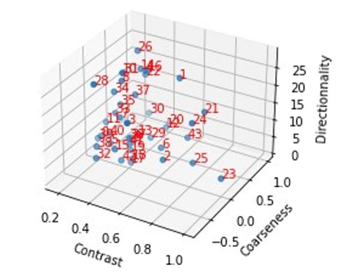
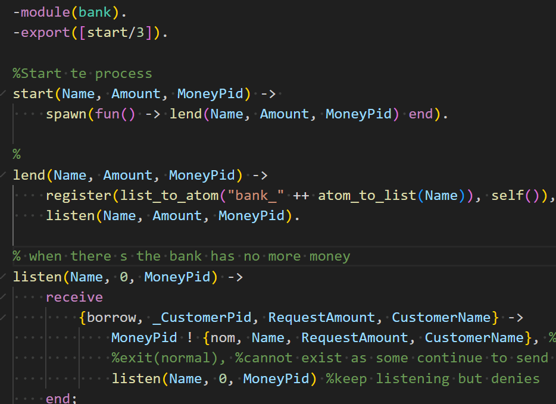
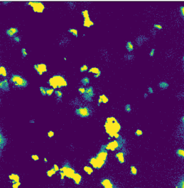
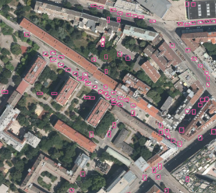
 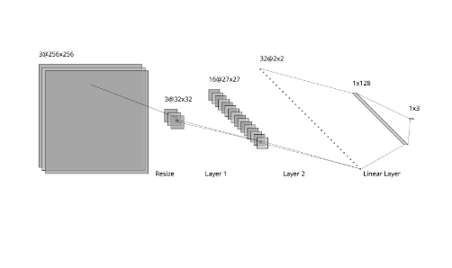
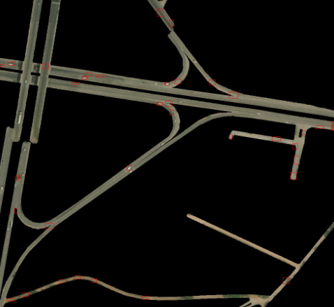
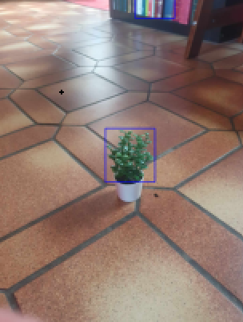
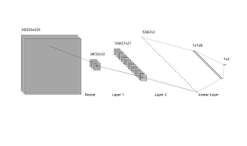
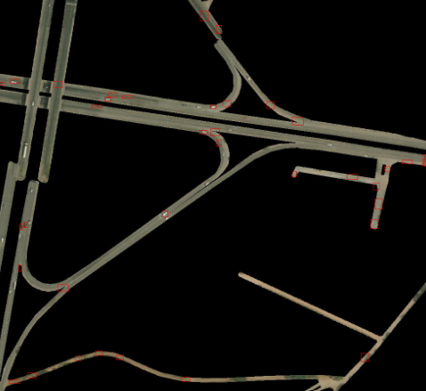
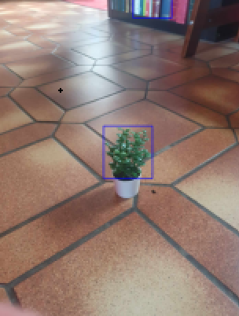
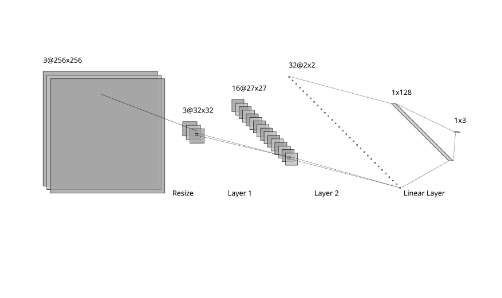
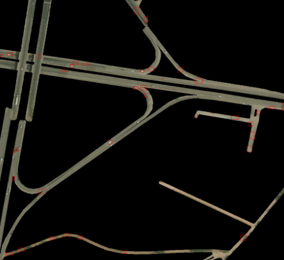
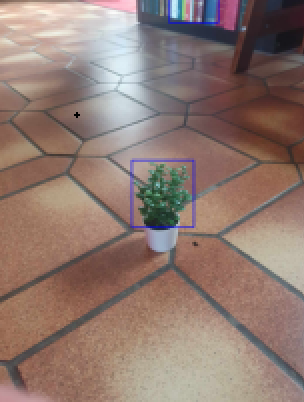
Proud French Engineer, finishing the master of Computer Science of Concordia University.
Voracious reader, amateur pianist, history buff, curious about everything, environmentally conscious.
From an interest in painting, light and colour, to computer vision, to AI and machine learning.
Here are some of my projects. My favourite? Urban detection of cars! Made a nerd of City Planning out of me — and it stuck.
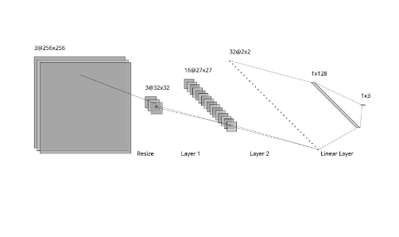
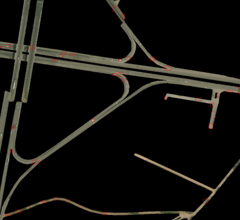
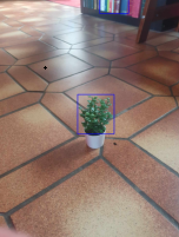
Taken in the French Saint-Étienne School of Mines, after the highly competitive french Classes Préparatoires.
Taken as a double-diploma student in Concordia, getting a 3.8 GPA.
Total Nerd, fan of the man of Lascaux, the first known drawing of a human being in our History. And it is drawn dying.
I had to fight my mother so she accepted to teach me piano — which she is a teacher of. I have not regretted that since.
I am proud to have lots of friends, on each side of the Ocean. Keeping in touch is for me of foremost importance. Loyalty through time, above all.